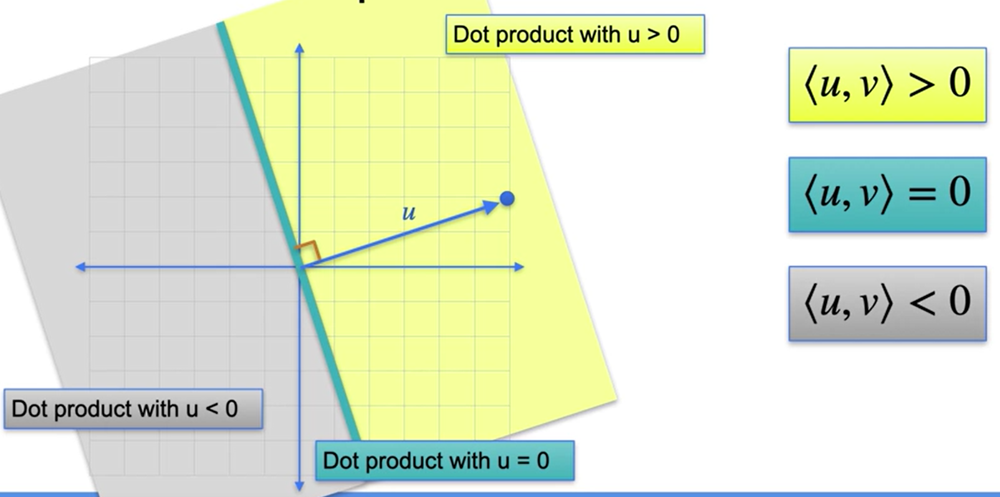
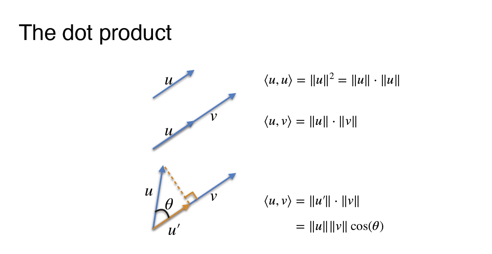
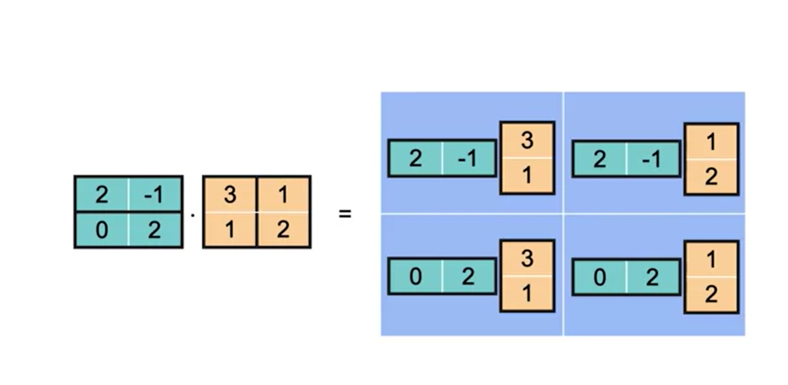
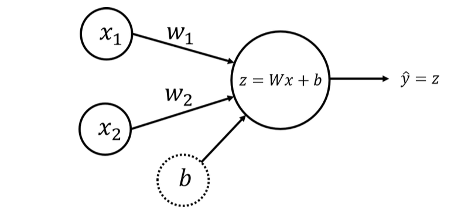

Módulo 3: Vetores e transformações lineares
Vetores e transformações lineares
Álgebra Vetorial
Vetores e suas propriedades
Notação
vetor linha: \(x = (x_1,x_2~...~x_n)\)
vetor coluna: \(x= \begin{pmatrix}x_1\\x_2\\...\\x_n\end{pmatrix}\)
Outras notações: \([x_1,x_2...x_n]\) e \(\begin{bmatrix}x_1\\x_2\\...\\x_n\end{bmatrix}\)
Definição geral: normas L1 e L2
Dado o vetor: \(x = (x_1, x_2, ...,x_n)\)
L1 ⇒ \(||x||_1=|x_1|+|x_2|+...+|x_n|\)
L2 ⇒ \(||x||_2=\sqrt{x^2_1+x^2_2+...+x^2_n}\)
Operações vetoriais
Soma de vetores
Para obter a soma de dois vetores é bem simples.
Imagine que temos os vetores \(u=(4,1)\) e \(v = (1,3)\);
A soma dos vetores \(u+v = (4+1,1+3)=(5,4)\)
Subtração de vetores
Imagine que temos os mesmos vetores \(u=(4,1)\) e \(v = (1,3)\);
A subtração dos vetores \(u-v = (4-1,1-3)=(3,-2)\)
Definição geral: soma e subtração de vetores
Imagine que temos os vetores
\(x = (x_1, x_2, ...,x_n)\) e \(y = (y_1, y_2, ...,y_n)\)
A soma será feita de componente por componente \(x + y = (x_1 + y_1, x_2+y2,...x_n+y_n)\)
A subtração também será feita de componente por componente \(x - y = (x_1 - y_1, x_2-y2,...x_n-y_n)\)
A diferença entre dois vetores é muito importante para dizer a que distância dois vetores estão um do outro.
No exemplo anterior tínhamos os vetores \(u=(4,1)\) e \(v = (1,3)\);
A distância entre eles pode ser definida (Distância L1) como: \(|u-v|=|5|+|-3| = 8\). Podemos usar L2 também.
Multiplicação de um vetor por um escalar
Imagine que temos o vetor \(u = (1,2)\) e o escalar \(\lambda = 3\) a multiplicação será \(\lambda u = (3,6)\)
Definição geral: multiplicação por um escalar
Imagine o escalar a seguir: \(x = (x_1, x_2, ...,x_n)\) e o escalar \(\lambda\), a multiplicação será; \(\lambda x = ( \lambda x_1,\lambda x_2, ..., \lambda x_n)\)
O produto escalar
A norma L2 será sempre a raiz quadrada do produto escalar de um vetor.
Imagine um vetor, \((4,3)\). O produto escalar será: \([4~~3] \begin{bmatrix}4\\3\end{bmatrix}\) = 25. Nesse caso, a distância entre os vetores é o mesmo que usar a norma \(L2\).
\(\text{Norma L2} =\sqrt{4^2+3^2} = \sqrt{25}= 5\)
Notação: \(|u|_2 = \sqrt{\langle u,u \rangle}\)
Além disso, a distância com relação a norma euclidiana, definida por:
\(d(u,v) = \left\| u-v \right\|_2 = \sqrt{(u_1 - v_1)^2 + (u_2 - v_2)^2 + ... + (u_n - v_n)^2}\)
Transposta de um vetor:
\[ \begin{bmatrix}2\\4\\1\end{bmatrix}^T = [2~~4~~1] \]
\[ [2~~4~~1]^T=\begin{bmatrix}2\\4\\1\end{bmatrix} \]
Transposta de uma matriz:
\[ \begin{bmatrix}2&5\\4&7\\1&3\end{bmatrix}^T = \begin{bmatrix}2&4&1\\5&7&3\end{bmatrix} \]
Produto escalar: definição geral
Imagine os vetores \(x = (x_1, x_2, ...,x_n)\) e \(y = (y_1, y_2, ...,y_n)\)
O produto escalar será:
\[ x\cdot y = (x_1 \cdot y_1) + (x_2 \cdot y_2) + ... + (x_n \cdot y_n) \]
Outras definições: \(\langle x,y \rangle\)
\[ x \cdot y^T = (x_1~~x_2~~...~~x_n) \cdot \begin{pmatrix}y_1\\y_2\\\vdots\\y_n \end{pmatrix} \]
Produto de pontos geométricos


Multiplicação de uma matriz por um vetor
Equações lineares em forma de produto escalar
Observe as equações:
\(a+b+c=10~~(1)\); \(a+2b+c=15~~(2)\); \(a+b+2c=12~~(3)\)
Elas podem ser representadas como
\([1~~1~~1]\cdot \begin{bmatrix}a\\b\\c\end{bmatrix}=10~~(1);\) \([1~~2~~1]\cdot \begin{bmatrix}a\\b\\c\end{bmatrix}=15~~(2);\) \([1~~1~~2]\cdot \begin{bmatrix}a\\b\\c\end{bmatrix}=12~~(3)\)
Podemos pegar esses três produtos escalares e transformá-los em uma matriz, pois o vetor coluna é o mesmo nos três produtos escalares, assim, teríamos:
\[ \begin{bmatrix}1&1&1\\1&2&1\\1&1&2\end{bmatrix}\cdot \begin{bmatrix} a\\b\\c\end{bmatrix}=\begin{bmatrix} 10\\15\\12\end{bmatrix} \]
Operações vetoriais: Multiplicação escalar, soma e produto escalar de vetores usando Python
# vamos carregar o numpy
import numpy as npMultiplicação escalar e soma de vetores
Como sabemos, podemos representar os vetores em formato de setas
# Visualizando o vetor em seta
import matplotlib.pyplot as plt
def plot_vectors(list_v, list_label, list_color):
_, ax = plt.subplots(figsize=(10, 10))
ax.tick_params(axis='x', labelsize=14)
ax.tick_params(axis='y', labelsize=14)
ax.set_xticks(np.arange(-10, 10))
ax.set_yticks(np.arange(-10, 10))
plt.axis([-10, 10, -10, 10])
for i, v in enumerate(list_v):
sgn = 0.4 * np.array([[1] if i==0 else [i] for i in np.sign(v)])
plt.quiver(v[0], v[1], color=list_color[i], angles='xy', scale_units='xy', scale=1)
ax.text(v[0]-0.2+sgn[0], v[1]-0.2+sgn[1], list_label[i], fontsize=14, color=list_color[i])
plt.grid()
plt.gca().set_aspect("equal")
plt.show()
v = np.array([[1],[3]])
# Arguments: list of vectors as NumPy arrays, labels, colors.
plot_vectors([v], [f"$v$"], ["black"])O vetor é definido por sua norma (comprimento, magnitude) e direção, e não por sua posição real.
Multiplicação por um escalar
Se o escalar for positivo ao multiplicar pelo vetor ele terá a mesma direção, caso contrário será na posição oposta.
plot_vectors([v, 2*v, -2*v], [f"$v$", f"$2v$", f"$-2v$"], ["black", "green", "blue"])Soma de vetores
A soma de dois vetores corresponde a diagonal partindo do mesmo ponto, segundo a chamada lei do paralelogramo.
v = np.array([[1],[3]])
w = np.array([[4],[-1]])
plot_vectors([v, w, v + w], [f"$v$", f"$w$", f"$v + w$"], ["black", "black", "red"])
# plot_vectors([v, w, np.add(v, w)], [f"$v$", f"$w$", f"$v + w$"], ["black", "black", "red"])Normas de um vetor
A norma de um vetor pode ser definida como um número não negativo que descreve a extensão do vetor no espaço.
print("Norm of a vector v is", np.linalg.norm(v))Produto escalar
O produto escalar é a operação algébrica entre dois vetores \(\vec x=[x_1~~x_2~~...~~x_n]^T \in R^n\) e \(\vec x=[y_1~~y_2~~...~~y_n]^T \in R^n\) em que retorna um único valor. O produto escalar pode ser representado por \(x \cdot y\) e é definido como:
\[ x \cdot y = \sum^n_{i=1} = x_1y_1+x_2y_2+...+x_ny_n \]
Produto escalar usando Python
# basta definir os vetore
x = [1, -2, -5]
y = [4, 3, -1]
# define a função que calcula o produto escalar
def dot(x, y):
s=0
for xi, yi in zip(x, y):
s += xi * yi
return s
print("O produto escalar entre x e y é", dot(x, y))
print("np.dot(x,y) pode ser usada para calcular o produto escalar entre x e y:", np.dot(x, y)) Transformações lineares
Definição de transformação linear
Sejam \(V\) e \(W\) **espaços vetoriais. A função \(T: V \to W\)
é a transformação linear de \(V\) em \(W\) quando as duas propriedades abaixo são verdadeiras para quaisquer u e v em \(V\) e para qualquer escalar c.
- \(T(u + v) = T(u) + (v)\)
- \(T(cu)=cT(u)\)
Propriedades das transformações lineares
Seja T uma transformação linear de V em W e sejam u e v em V. Então as propriedades listadas abaixo são verdadeiras.
- \(T(0)=0\)
- \(T(-v) = -T(v)\)
- \(T(u-v)=T(u)-T(v)\)
- Se \(v = c_1v_1+c_2v_2+...+c_nv_n\) então \(T(v) = T(c_1v_1+c_2v_2+...+c_nv_n)=c_1T(v_1)+c_2T(v_2)+...+c_nT(v_n)\)
Matrizes dada por transformações lineares
Seja a matriz \(\begin{bmatrix}3&1\\1&2\end{bmatrix}\) a transformação da matriz linear no ponto (0, 0) será definida por \(\begin{bmatrix}3*0 + 1*0\\1*0+2*0\end{bmatrix} = \begin{bmatrix}0\\0\end{bmatrix}\)
No ponto \((1, 1) = \begin{bmatrix}3*1 + 1*1\\1*1+2*1\end{bmatrix} = \begin{bmatrix}4\\3\end{bmatrix}\)
Transformação linear dada por uma matriz
Multiplicação de matrizes
Definição
Se \(A = [a{ij}]\) é uma matriz \(\text{m x n}\) e \(B = [b_{ij}]\) é uma matriz \(\text{ n x p}\), então o produto \(AB\) é uma matriz \(\text{m x p}\)
\(AB = [c_{ij}]\)
onde
\(c_{ij} = \sum\limits^n_{k=1} a_{ik}b_{kj} = a_{i1}b_{1j}+a_{i2}b_{2j}+a_{i3}b_{3j}+...+a_{in}b_{nj}\)
Esta definição significa que, para encontrar o elemento na \(i-ésima\) linha e na \(j-ésima\) coluna do produto \(AB\), basta multiplicar os elementos na \(i-ésima\) linha de \(A\) pelos elementos correspondentes na \(j-ésima\) coluna de \(B\) e em seguida somar os resultados.

Matriz identidade
A matriz identidade é a matriz que, quando multiplicada por qualquer outra matriz, dá a mesma matriz, e sua transformação linear correspondente é muito simples.
Inversa de uma matriz
Definição da inversa de uma matriz
Uma matriz quadrada \(A\) de ordem \(n\) é invertível (ou não singular) quando existe uma matriz \(B\) de tamanho \(\text{n x n}\) tal que
\(AB = BA = I_n\),
onde \(I_n\) é a matriz identidade de ordem \(n\). A matriz \(B\) é a inversa multiplicativa) de \(A\). Uma matriz que não possui uma inversa é não invertível (ou singular).
As matrizes não quadradas não têm inversas.
Exemplo:
Encontre a inversa da matriz \(A=\begin{bmatrix}1&4\\-1&-3\end{bmatrix}\)
SOLUÇÃO:
Para encontrar a inversa de \(A\), resolva a equação matricial \(AX = I\) para determinar \(X\).
\(\begin{bmatrix}1&4\\-1&-3\end{bmatrix} \begin{bmatrix}x_{11}&x_{12}\\x_{21}&x_{22}\end{bmatrix} =\begin{bmatrix}1&0\\0&1\end{bmatrix}\)
\(\begin{bmatrix}x_{11}+4x_{21}&x_{12}+4x_{22}\\-x_{11}-3x_{21}&-x_{12}-3x_{22}\end{bmatrix} = \begin{bmatrix}1&0\\0&1\end{bmatrix}\)
Igualando os elementos correspondentes, você obtém dois sistemas de equações lineares.
\(\begin{cases}x_{11} + 4x_{21} = 1 \\ -x_{11}-3x_{21}=0 \end{cases}\)
\(\begin{cases}x_{12} + 4x_{22} = 0 \\ -x_{12}-3x_{22}=1 \end{cases}\)
Resolvendo o primeiro sistema, você encontra que \(x_{11}=-3\) e \(x_{21} = 1\). De forma semelhante, resolvendo o segundo sistema, encontra que \(x_{12} = 4\) e \(x_{22}= 1\). Então, a inversa de \(A\) é
\(A = A^{-1}=\begin{bmatrix}-3&-4\\1&1\end{bmatrix}\)
Quais matrizes têm uma inversa?
Propriedades de matrizes inversas
Se \(A\) é uma matriz invertível, \(k\) é um número inteiro positivo e \(c\) é um escalar diferente de zero, então \(A^{-1}\), \(A^k\), \(cA\) e \(AT\) são invertíveis e as afirmações abaixo são verdadeiras.
- \((A^{-1})^{-1} = A\)
- \((A^k)^{-1}=\underbrace{A^{-1}A^{-1}…A^{-1}}_{\text{k fatores}}=(A^{-1})^k\)
- \((cA)^{-1}=\frac{1}{c}A^{-1}\)
- \((A^T)^{-1}=(A^{-1})^T\)
Matriz singular não tem inversa. Determinante = 0
Multiplicação de matrizes usando Numpy
import numpy as npDefinição:
Se \(A\) é uma matriz \(\text{m x n }\) e \(B\) é uma matriz \(\text{n x p}\) a matriz \(C\) será o produto \(C = AB\). É definida sendo uma matriz \(\text{m x p}\) em que:
\(c_{ij} = a_{ij}b_{ij}+a_{i2}b_{2j}+…+a_{in}b_{nj} = \sum\limits^n_{k=1}a_{ik}b_{kj}\)
Onde \(a_{ik}\) são os elemento da matriz \(A\), \(b_{kj}\) são os elementos da matriz \(B\), e \(i = 1\), \(\ldots, m, k=1, \ldots, n, j = 1, \ldots, p\). Em outras palavras, \(c_{ij}\) é o produto escalar \(i-th\) linha de A e o \(j-th\) é a coluna de \(B\).
A multiplicação de matrizes usando numpy é mais eficiente quando usamos a forma vetorizada.
- Agora vamos definir duas mabtrizes
A = np.array([[4, 9, 9], [9, 1, 6], [9, 2, 3]])
print("Matrix A (3 by 3):\n", A)
B = np.array([[2, 2], [5, 7], [4, 4]])
print("Matrix B (3 by 2):\n", B)- Para multiplicar as duas matrizes usamos
np.matmul(A, B)- podemos obter o mesmo resultado utilizando a seguinte operação no
pythonbase.
A @ BMatematicamente, a multiplicação de matrizes é possível somente se;
O número de colunas da matriz A for igual o número de linhas de B.
Podemos checar essas informações com:
try:
np.matmul(B, A)
except ValueError as err:
print(err)Também usando:
try:
B @ A
except ValueError as err:
print(err)Podemos checar as dimensões das matrizes assim, veja o exemplo abaixo:
x = np.array([1, -2, -5])
y = np.array([4, 3, -1])
print("Shape of vector x:", x.shape)
print("Number of dimensions of vector x:", x.ndim)
print("Shape of vector x, reshaped to a matrix:", x.reshape((3, 1)).shape)
print("Number of dimensions of vector x, reshaped to a matrix:", x.reshape((3, 1)).ndim)
np.matmul(x,y)Transformações lineares usando Python
Vamos precisar dos pacotes
import numpy as np
# OpenCV library for image transformations.
import cv2Uma transformação é uma função que vai de um espaço vetorial a outro, respeitando a estrutura (linear) subjacente de cada espaço vetorial. Ao se referir a uma transformação específica, você pode usar um símbolo, como \(T\). Especificando os espaços que contêm os vetores de entrada e saída, por exemplo, \(\mathbb{R}^2\) e \(\mathbb{R}^3\), você pode escrever \(T: \mathbb{R}^2 \rightarrow \mathbb{R}^3\). Ao transformar o vetor \(v \in \mathbb{R}^2\) no vetor \(w\in\mathbb{R}^3\) pela transformação \(T\), você pode usar a notação \(T(v)=w\) e lê-la como “T de v é igual a w” ou “o vetor w é uma imagem do vetor v pela transformação T”.
A seguinte função em Python corresponde à transformação \(T: \mathbb{R}^2 \rightarrow \mathbb{R}^3\) com a fórmula simbólica abaixo:
\[ T\begin{pmatrix} \begin{bmatrix} v_1 \\v_2 \end{bmatrix}\end{pmatrix}= \begin{bmatrix} 3v_1 \\ 0 \\ -2v_2 \end{bmatrix} \tag{1} \]
def T(v):
w = np.zeros((3,1))
w[0,0] = 3*v[0,0]
w[2,0] = -2*v[1,0]
return w
v = np.array([[3], [5]])
w = T(v)
print("Original vector:\n", v, "\n\n Result of the transformation:\n", w)Transformações Lineares
Uma transformação \(T\) é dita linear se as seguintes duas propriedades forem verdadeiras para qualquer escalar \(k\) e quaisquer vetores de entrada \(u\) e \(v\):
- \(T(kv)=kT(v)\),
- \(T(u+v)=T(u)+T(v)\).
No exemplo acima, \(T\) é uma transformação linear:
\[ T(kv) = T \begin{pmatrix}\begin{bmatrix} kv_1 \\ kv_2 \end{bmatrix}\end{pmatrix} = \begin{bmatrix} 3kv_1 \\ 0 \\ -2kv_2 \end{bmatrix} = k\begin{bmatrix} 3v_1 \\ 0 \\ -2v_2 \end{bmatrix} = kT(v),\tag{2} \]
\[ T (u+v) = T \begin{pmatrix}\begin{bmatrix} u_1 + v_1 \\ u_2 + v_2 \end{bmatrix}\end{pmatrix} = \begin{bmatrix} 3(u_1+v_1) \\ 0 \\ -2(u_2+v_2) \end{bmatrix} = \begin{bmatrix} 3u_1 \\ 0 \\ -2u_2 \end{bmatrix} + \begin{bmatrix} 3v_1 \\ 0 \\ -2v_2 \end{bmatrix} = T(u)+T(v).\tag{3} \]
Você pode alterar os valores de \(k\) ou dos vetores \(u\) e \(v\) na célula abaixo para verificar que isso é verdadeiro para alguns valores específicos.
u = np.array([[1], [-2]])
v = np.array([[2], [4]])
k = 7
print("T(k*v):\n", T(k*v), "\n k*T(v):\n", k*T(v), "\n\n")
print("T(u+v):\n", T(u+v), "\n T(u)+T(v):\n", T(u)+T(v))A multiplicação de matrizes geralmente não é comutativa
Os exemplos a seguir ilustram que a multiplicação de matrizes geralmente não é comutativa.
Por exemplo, o produto \(AB\) de uma matriz \(2 \times 3\) com uma matriz \(3 \times 4\) resulta em uma matriz \(2 \times 4\), mas o produto \(BA\) de uma matriz \(3 \times 4\) com uma matriz \(2 \times 3\) não é definido.
Mesmo para duas matrizes quadradas \(M\) e \(N\), ambas de tamanho \(n \times n\), a multiplicação de matrizes não é necessariamente comutativa: os produtos \(MN\) e \(NM\) podem ser diferentes.
Por exemplo, seja
\(M = \begin{bmatrix} 0 & 1 \\ -1 & 0 \end{bmatrix}, \quad N = \begin{bmatrix} 1 & 0 \\ 1 & 1 \end{bmatrix},\)
de modo que
\(MN = \begin{bmatrix} 0 & 1 \\ -1 & 0 \end{bmatrix} \begin{bmatrix} 1 & 0 \\ 1 & 1 \end{bmatrix} = \begin{bmatrix} 1 & 1 \\ -1 & 0 \end{bmatrix},\)
e
\(NM = \begin{bmatrix} 1 & 0 \\ 1 & 1 \end{bmatrix} \begin{bmatrix} 0 & 1 \\ -1 & 0 \end{bmatrix} = \begin{bmatrix} 0 & 1 \\ -1 & -1 \end{bmatrix}.\)
Assim, as matrizes quadradas \(M\) e \(N\) não comutam: \(MN \neq NM.\)
Transformações Lineares e Redes Neurais
Transformações
Uma transformação é uma função de um espaço vetorial para outro que respeita a estrutura subjacente (linear) de cada espaço vetorial. Ao se referir a uma transformação específica, pode-se usar um símbolo, como \(T\). Especificando os espaços que contêm os vetores de entrada e saída, por exemplo, \(\mathbb{R}^2\) e \(\mathbb{R}^3\), pode-se escrever \(T: \mathbb{R}^2 \rightarrow \mathbb{R}^3\). Transformando o vetor \(v \in \mathbb{R}^2\) no vetor \(w \in \mathbb{R}^3\) por meio da transformação \(T\), você pode usar a notação \(T(v)=w\) e ler como “T de v é igual a w” ou “o vetor w é uma imagem do vetor v sob a transformação T”.
A função Python a seguir corresponde à transformação \(T: \mathbb{R}^2 \rightarrow \mathbb{R}^3\) com a seguinte fórmula simbólica:
\[ T\begin{pmatrix} \begin{bmatrix} v_1 \\ v_2 \end{bmatrix}\end{pmatrix}= \begin{bmatrix} 3v_1 \\ 0 \\ -2v_2 \end{bmatrix} \tag{1} \]
def T(v):
w = np.zeros((3,1))
w[0,0] = 3*v[0,0]
w[2,0] = -2*v[1,0]
return w
v = np.array([[3], [5]])
w = T(v)
print("Original vector:\n", v, "\n\n Result of the transformation:\n", w)Transformações Lineares
Uma transformação \(T\) é dita linear se as duas propriedades a seguir forem verdadeiras para qualquer escalar \(k\) e quaisquer vetores de entrada \(u\) e \(v\):
- \(T(kv)=kT(v)\),
- \(T(u+v)=T(u)+T(v)\).
No exemplo acima, \(T\) é uma transformação linear:
\[ T (kv) = T \begin{pmatrix}\begin{bmatrix} kv_1 \\ kv_2 \end{bmatrix}\end{pmatrix} = \begin{bmatrix} 3kv_1 \\ 0 \\ -2kv_2 \end{bmatrix} = k\begin{bmatrix} 3v_1 \\ 0 \\ -2v_2 \end{bmatrix} = kT(v),\tag{2} \]
\[ T (u+v) = T \begin{pmatrix}\begin{bmatrix} u_1 + v_1 \\ u_2 + v_2 \end{bmatrix}\end{pmatrix} = \begin{bmatrix} 3(u_1+v_1) \\ 0 \\ -2(u_2+v_2) \end{bmatrix} = \begin{bmatrix} 3u_1 \\ 0 \\ -2u_2 \end{bmatrix} + \begin{bmatrix} 3v_1 \\ 0 \\ -2v_2 \end{bmatrix} = T(u)+T(v).\tag{3} \]
Verificando se essa afirmação é verdadeira:
u = np.array([[1], [-2]])
v = np.array([[2], [4]])
k = 7
print("T(k*v):\n", T(k*v), "\n k*T(v):\n", k*T(v), "\n\n")
print("T(u+v):\n", T(u+v), "\n\n T(u)+T(v):\n", T(u)+T(v))Transformações Definidas como Multiplicação de Matrizes
Seja \(L: \mathbb{R}^m \rightarrow \mathbb{R}^n\) definida por uma matriz \(A\), onde \(L(v)=Av\), a multiplicação da matriz \(A\) (\(n\times m\)) pelo vetor \(v\) (\(m\times 1\)) resulta no vetor \(w\) (\(n\times 1\)).
Agora tente adivinhar quais devem ser os elementos da matriz \(A\) correspondentes à transformação \(L: \mathbb{R}^2 \rightarrow \mathbb{R}^3\):
\[ L\begin{pmatrix} \begin{bmatrix} v_1 \\ v_2 \end{bmatrix}\end{pmatrix}= \begin{bmatrix} 3v_1 \\ 0 \\ -2v_2 \end{bmatrix}= \begin{bmatrix} ? & ? \\ ? & ? \\ ? & ? \end{bmatrix} \begin{bmatrix} v_1 \\ v_2 \end{bmatrix} \tag{4} \]
Para fazer isso, escreva a transformação \(L\) como \(Av\) e depois realize a multiplicação matricial:
\[ L\begin{pmatrix} \begin{bmatrix} v_1 \\ v_2 \end{bmatrix}\end{pmatrix}= A\begin{bmatrix} v_1 \\ v_2 \end{bmatrix}= \begin{bmatrix} a_{1,1} & a_{1,2} \\ a_{2,1} & a_{2,2} \\ a_{3,1} & a_{3,2} \end{bmatrix} \begin{bmatrix} v_1 \\ v_2 \end{bmatrix}= \begin{bmatrix} a_{1,1}v_1+a_{1,2}v_2 \\ a_{2,1}v_1+a_{2,2}v_2 \\ a_{3,1}v_1+a_{3,2}v_2 \\ \end{bmatrix}= \begin{bmatrix} 3v_1 \\ 0 \\ -2v_2 \end{bmatrix}\tag{5} \]
Consegue ver agora quais devem ser os valores dos elementos \(a_{i,j}\) da matriz \(A\) para que as igualdades \((5)\) sejam corretas? Descubra a resposta na célula de código a seguir:
def L(v):
A = np.array([[3,0], [0,0], [0,-2]])
print("Transformation matrix:\n", A, "\n")
w = A @ v
return w
v = np.array([[3], [5]])
w = L(v)
print("Original vector:\n", v, "\n\n Result of the transformation:\n", w)Transformações Definidas como Multiplicação de Matrizes
Seja \(L: \mathbb{R}^m \rightarrow \mathbb{R}^n\) definida por uma matriz \(A\), onde \(L(v)=Av\), sendo a multiplicação da matriz \(A\) (\(n\times m\)) pelo vetor \(v\) (\(m\times 1\)) resultando no vetor \(w\) (\(n\times 1\)).
Agora tente adivinhar quais devem ser os elementos da matriz \(A\) correspondentes à transformação \(L: \mathbb{R}^2 \rightarrow \mathbb{R}^3\):
\[ L\begin{pmatrix} \begin{bmatrix} v_1 \\ v_2 \end{bmatrix}\end{pmatrix}= \begin{bmatrix} 3v_1 \\ 0 \\ -2v_2 \end{bmatrix}= \begin{bmatrix} ? & ? \\ ? & ? \\ ? & ? \end{bmatrix} \begin{bmatrix} v_1 \\ v_2 \end{bmatrix} \tag{4} \]
Para fazer isso, escreva a transformação L como \(Av\) e depois realize a multiplicação matricial:
\[ L\begin{pmatrix} \begin{bmatrix} v_1 \\ v_2 \end{bmatrix}\end{pmatrix}= A\begin{bmatrix} v_1 \\ v_2 \end{bmatrix}= \begin{bmatrix} a_{1,1} & a_{1,2} \\ a_{2,1} & a_{2,2} \\ a_{3,1} & a_{3,2} \end{bmatrix} \begin{bmatrix} v_1 \\ v_2 \end{bmatrix}= \begin{bmatrix} a_{1,1}v_1+a_{1,2}v_2 \\ a_{2,1}v_1+a_{2,2}v_2 \\ a_{3,1}v_1+a_{3,2}v_2 \\ \end{bmatrix}= \begin{bmatrix} 3v_1 \\ 0 \\ -2v_2 \end{bmatrix}\tag{5} \]
Você consegue ver agora quais devem ser os valores dos elementos \(a_{i,j}\) da matriz \(A\)para que as igualdades (5) sejam corretas? Descubra a resposta na célula de código a seguir:
img = np.loadtxt('data/image.txt')
print('Shape: ',img.shape)
print(img)A imagem é apenas uma matriz de \(2 \times 329076\), onde cada coluna é um vetor no plano. Portanto, você pode obter todas as coordenadas \(x\) chamando img[0] e todas as coordenadas img[1]. Agora vamos plotar a imagem!
plt.scatter(img[0], img[1], s = 0.001, color = 'black')Escalonamento Horizontal (Dilatação)
O escalonamento horizontal (fator \(2\) neste exemplo) pode ser definido considerando a transformação de um vetor \(e_1=\begin{bmatrix}1 \\ 0\end{bmatrix}\) em um vetor \(\begin{bmatrix}2 \\ 0\end{bmatrix}\) e mantendo o vetor \(e_2=\begin{bmatrix}0 \\ 1\end{bmatrix}\) sem qualquer alteração. A função T_hscaling() a seguir corresponde ao escalonamento horizontal (fator \(2\)) de um vetor. A segunda função transform_vectors() aplica a transformação definida a um conjunto de vetores (aqui dois vetores).
def T_hscaling(v):
A = np.array([[2,0], [0,1]])
w = A @ v
return w
def transform_vectors(T, v1, v2):
V = np.hstack((v1, v2))
W = T(V)
return W
e1 = np.array([[1], [0]])
e2 = np.array([[0], [1]])
transformation_result_hscaling = transform_vectors(T_hscaling, e1, e2)
print("Original vectors:\n e1= \n", e1, "\n e2=\n", e2,
"\n\n Result of the transformation (matrix form):\n", transformation_result_hscaling)Visualizando
utils.plot_transformation(T_hscaling,e1,e2)plt.scatter(img[0], img[1], s = 0.001, color = 'black')
plt.scatter(T_hscaling(img)[0], T_hscaling(img)[1], s = 0.001, color = 'grey')Redes Neurais
Regressão Linear
Regressão linear é uma abordagem linear para modelar a relação entre uma resposta escalar (variável dependente) e uma ou mais variáveis explicativas (variáveis independentes).
O modelo de regressão linear com duas variáveis independentes \(x_1\), \(x_2\) pode ser escrito como
\(\hat{y} = w_1x_1 + w_2x_2 + b = Wx + b\)
onde \(Wx\) é o produto escalar do vetor de entrada \(x = \begin{bmatrix} x_1 & x_2\end{bmatrix}\) e o vetor de parâmetros \(W = \begin{bmatrix} w_1 & w_2\end{bmatrix}\), e o parâmetro escalar \(b\) é o intercepto.
O objetivo é o mesmo - encontrar os parâmetros “ideais” \(w_1\), \(w_2\) e \(b\) de modo que as diferenças entre os valores originais \(y_i\) e os valores previstos \(\hat{y}_i\) sejam mínimas.
Podemos usar um modelo de rede neural para fazer isso. A multiplicação de matrizes estará no cerne do modelo!
Modelo de Rede Neural com um Único Perceptron e Dois Nós de Entrada
Novamente, usaremos apenas um perceptron, mas com dois nós de entrada, conforme mostrado no esquema a seguir:

O cálculo da saída do perceptron para um exemplo de treinamento \(x = \begin{bmatrix} x_1 & x_2\end{bmatrix}\) pode ser escrito com o produto escalar:
\(z = w_1x_1 + w_2x_2 + b = Wx + b\)
onde os pesos estão no vetor \(W = \begin{bmatrix} w_1 & w_2\end{bmatrix}\) e o viés \(b\) é um escalar. A camada de saída terá o mesmo único nó \(\hat{y} = z\).
Organize todos os exemplos de treinamento em uma matriz \(X\) com forma (\(2 \times m\)), colocando \(x_1\) e \(x_2\) em colunas. Então, a multiplicação de matrizes de \(W\) (\(1 \times 2\)) e \(X\) (\(2 \times m\)) resultará em um vetor (\(1 \times m\))
\[ WX = \begin{bmatrix} w_1 & w_2\end{bmatrix} \begin{bmatrix} x_1^{(1)} & x_1^{(2)} & \dots & x_1^{(m)} \\ x_2^{(1)} & x_2^{(2)} & \dots & x_2^{(m)} \\ \end{bmatrix} = \begin{bmatrix} w_1x_1^{(1)} + w_2x_2^{(1)} & w_1x_1^{(2)} + w_2x_2^{(2)} & \dots & w_1x_1^{(m)} + w_2x_2^{(m)}\end{bmatrix} \]
E o modelo pode ser escrito como
\[ \begin{align} Z &= W X + b,\\ \hat{Y} &= Z, \tag{8}\end{align} \]
onde \(b\) é transmitido para o vetor de tamanho (\(1 \times m\)). Esses são os cálculos a serem realizados na etapa de propagação para frente.
Agora, você pode comparar o vetor resultante das previsões \(\hat{Y}\) (\(1 \times m\)) com o vetor original de dados \(Y\). Isso pode ser feito com a chamada função de custo, que mede quão próximo seu vetor de previsões está dos dados de treinamento. Ela avalia o quão bem os parâmetros \(w\) e \(b\) funcionam para resolver o problema. Existem muitas funções de custo diferentes disponíveis, dependendo da natureza do seu problema. Para sua rede neural simples, você pode calculá-la como:
\[ \mathcal{L}\left(w, b\right) = \frac{1}{2m}\sum_{i=1}^{m} \left(\hat{y}^{(i)} - y^{(i)}\right)^2.\tag{5} \]
O objetivo é minimizar a função de custo durante o treinamento, o que minimizará as diferenças entre os valores originais \(y_i\) e os valores previstos \(\hat{y}_i\) (a divisão por \(2m\) é feita apenas para fins de escala).
Quando seus pesos foram apenas inicializados com alguns valores aleatórios e nenhum treinamento foi realizado ainda, não se pode esperar bons resultados.
O próximo passo é ajustar os pesos e o viés para minimizar a função de custo. Este processo é chamado de propagação para trás e é feito de forma iterativa: você atualiza os parâmetros com uma pequena mudança e repete o processo.
Nota: A propagação para trás não é abordada neste curso - ela será discutida no próximo curso desta especialização.
A metodologia geral para construir uma rede neural é:
- Definir a estrutura da rede neural (número de unidades de entrada, número de unidades ocultas, etc.).
- Inicializar os parâmetros do modelo.
- Loop:
- Implementar a propagação para frente (calcular a saída do perceptron),
- Implementar a propagação para trás (para obter as correções necessárias nos parâmetros),
- Atualizar os parâmetros.
- Fazer previsões.